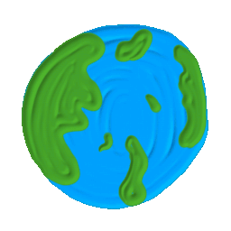

Bienvenido
Concientizar sobre el cuidado de nuestro planeta es esencial para las futuras generaciones.

Celebrando y protegiendo nuestro planeta
Concientizar sobre el cuidado de nuestro planeta es esencial para las futuras generaciones.
El Día de la Tierra se celebra cada 22 de abril para concienciar sobre los problemas ambientales que enfrentamos, como el cambio climático, la contaminación y la pérdida de biodiversidad.
Algunas acciones que puedes tomar incluyen: